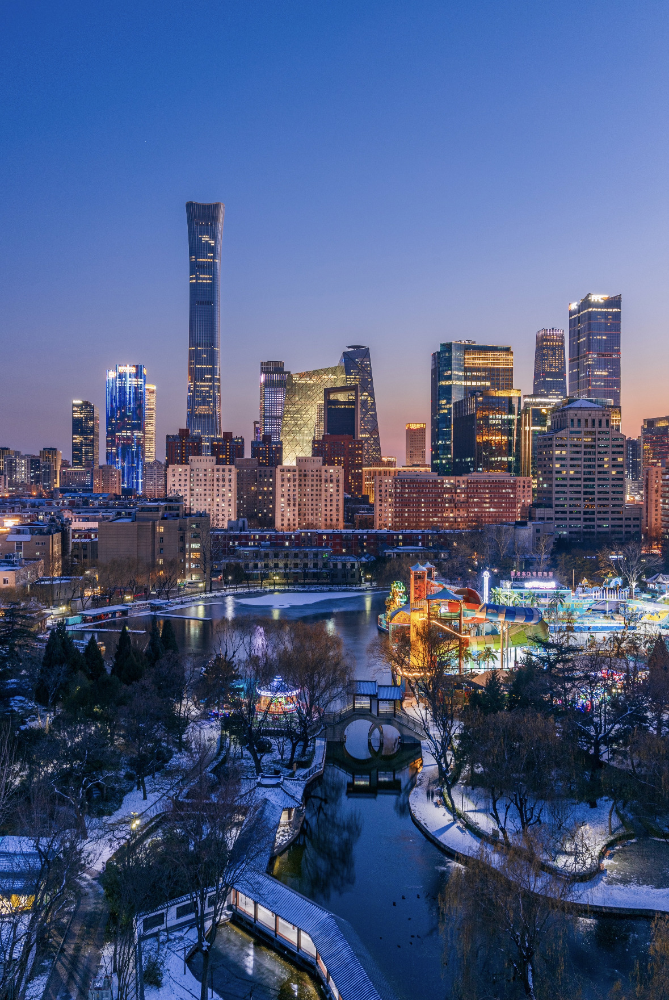
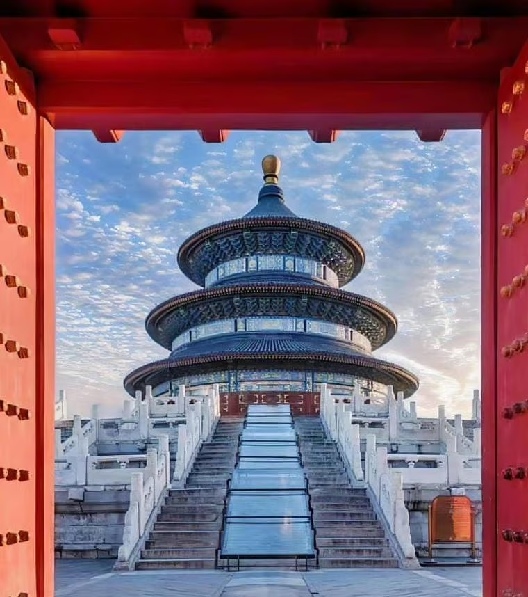
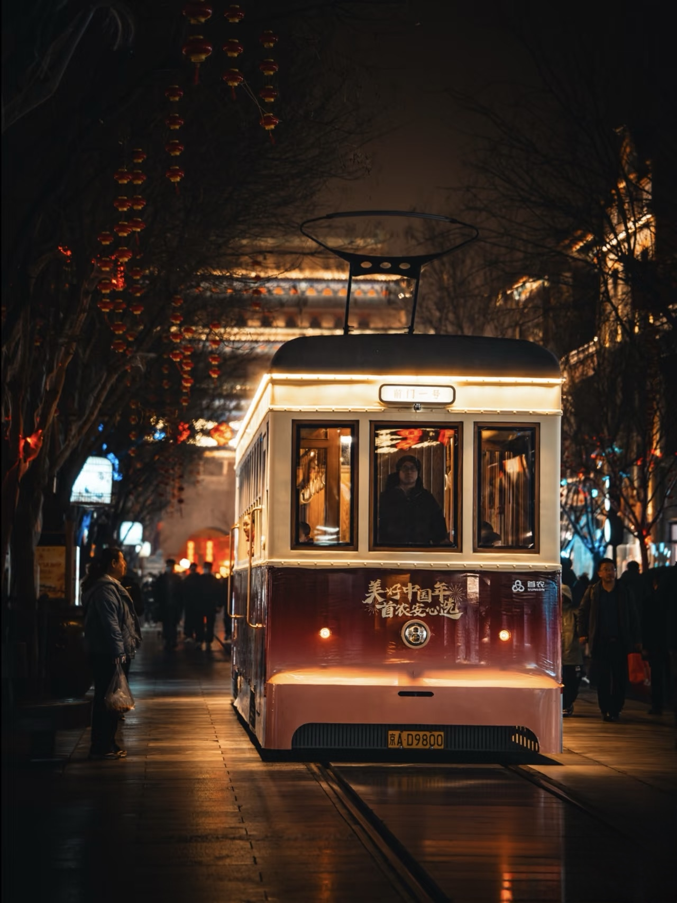
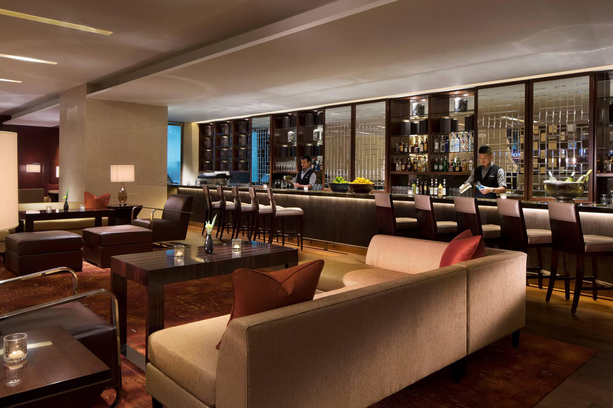
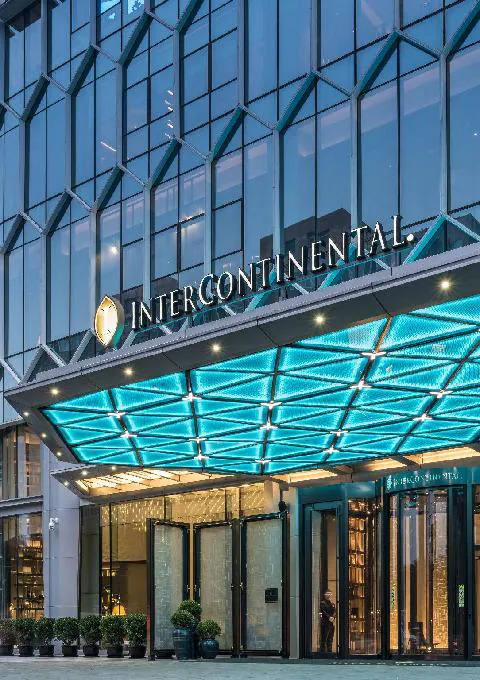
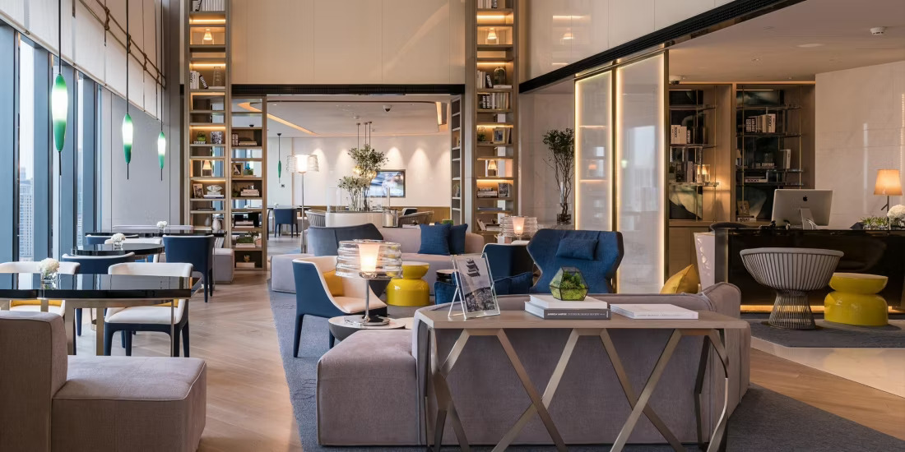
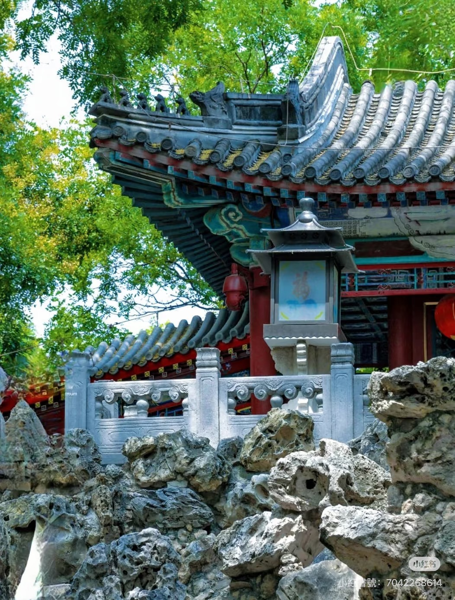
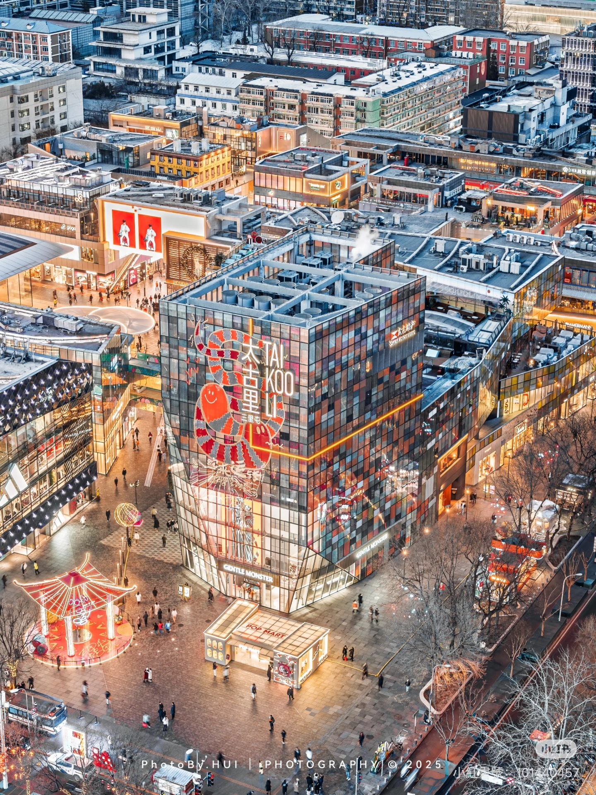
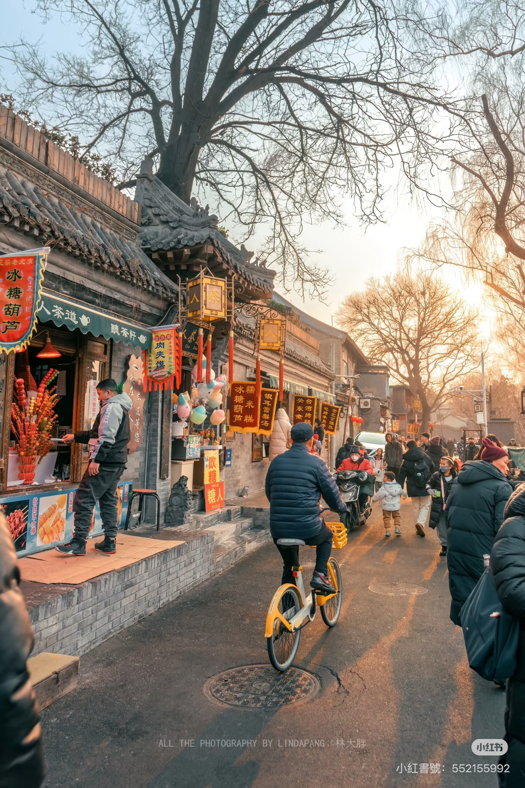

JW Marriott Hotel Beijing Central

營業時間：旺季 06:00 - 22:00

營業時間：約 08:00 - 22:00

營業時間：08:30 - 17:00 (週一閉館)
Happy Hour
營業時間：17:30 - 19:30

InterContinental Beijing Sanlitun

下午茶時光
營業時間：14:30 - 16:30

營業時間：旺季 08:00 - 17:00

Happy Hour
營業時間：18:00 - 20:00
營業時間：10:00 - 22:00
備註：三里屯酒吧街 22:00 後仍會營業

五六：21:00-05:00 / 日至四：21:00-03:00

營業時間：24小時開放

Happy Hour
營業時間：18:00 - 20:00
Happy Hour
營業時間：18:00 - 20:00